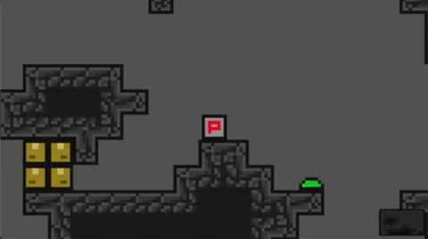
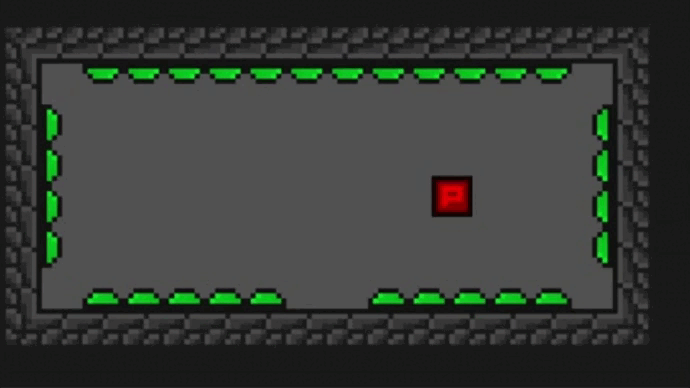

Bonjour à tous, c'est Nathan ! Bienvenue dans cette nouvelle newsletter. Si vous êtes nouveau, n'hésitez pas à lire les deux premières newsletters pour comprendre ce qui a déjà été fait.
Cette semaine, nous avons ajouté les fonctionnalités suivantes : le dash multidirectionnel et les jump-pad. Pour réaliser ces tâches nous nous sommes, comme à notre habitude, répartis en deux groupes.
Pour le dash, nous avons fait en sorte que le joueur puisse choisir la direction du dash à 360°. Le but étant de ne pas limiter les déplacements du joueur. Cependant, cela implique l'impossibilité d'effectuer un dash à 360° étant donné la limitation des touches du clavier comparé au joystick d'une manette. C'est pourquoi, nous recommanderons de jouer à la manette pour la meilleure expérience utilisateur.
Les jump-pad ont pour objectifs de permettre au joueur de faire des sauts plus haut. En effet, le saut, à sa hauteur maximale permet de sauter d'environ 2.2 blocs. Les jump-pad permettent de repousser cette limite. En fonction de la direction du jump-pad, le joueur est propulsé dans une certaine direction.
Cette semaine nous ne développerons pas de nouvelles fonctionnalités pour nous permettre d'améliorer notre organisation, ainsi que de nous permettre de rattraper le retard que nous avons pris sur la rédaction de notre rapport de projet. Cependant, nous ferons tout de même une newsletter pour vous tenir informé de ce qui se sera passé durant la semaine.
N'hésitez pas à suivre le développement et à nous poser des questions sur notre serveur Discord.
Merci d'avoir lu cette troisième newsletter et à la prochaine !
Team Spelunca.
Rédacteur : Nathan DELORME